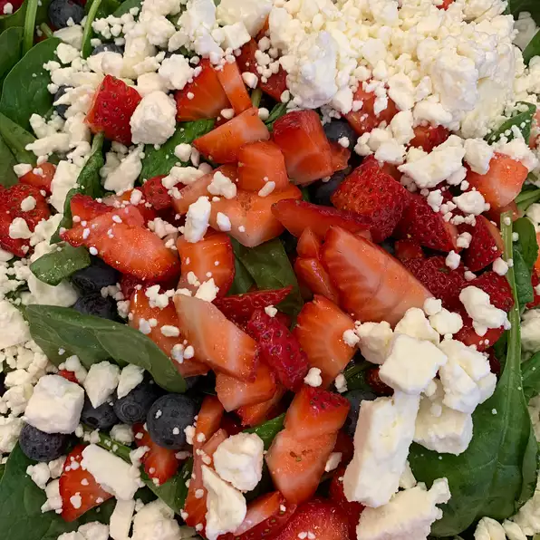

Strawberry Spinach Salad

Description
Ingredients
- half cup of white sugar
- half cup olive oil
- quarter cup distilled white vinegar
- 2 tbsp sesame seeds
- 1 tbsp poppy seeds
- 1 tbsp minced onions
- paprika
- quarter teaspoon of worcestershire sauce
- one quart of strawberries
- 10 ounces of spinach
- quarter cup of almonds
Steps
- Make dressing: Whisk together sugar, oil, vinegar, sesame seeds, poppy seeds, onion, paprika, and Worcestershire in a medium bowl. Cover and chill for 1 hour.
- Make salad: Combine strawberries, spinach, and almonds in a large bowl.
- Pour dressing over salad; toss to coat. Refrigerate for 10 to 15 minutes before serving.